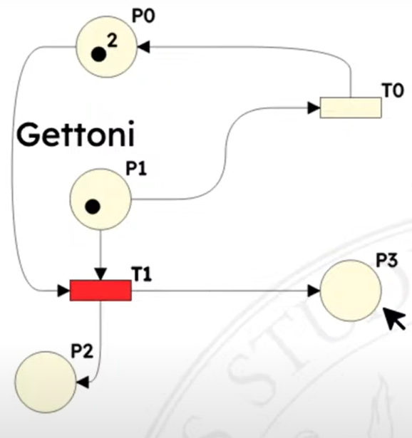
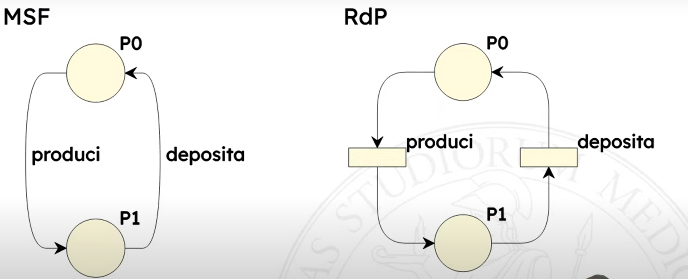

Nascono per descrivere sistemi concorrenti.
Marcatura: distribuzione dei token sui posti, piu’ formalmente e’ una funzione che assegna un intero non negativo ad ogni posto della rete Scatto: M[t1 > M′ M abilita t1: M[t1> I preset pre(t) sono i posti connessi alle transizioni, i postset pos(t) sono i posti connessi dalle transizioni. # Differenza con FSM
Posso assegnare piu’ token per lo stesso posto, il numero di token puo’ quindi rappresentare il numero di istanze di quel tipo di posto.
Ad esempio “tre robot che producono un certo manufatto”.
Se non c’e’ un limite imposto dalle logiche di transizione un posto puo’ accettare infiniti token. Cosa che con una FSM non posso modellare.
I token non si spostano! I token si creano e si distruggono!
Collegati a certi eventi, scattano quando sussitono certe condizioni, se hanno abbastanza gettoni nei posti di ingresso

T1 ha abbastanza token per scattare, i token finiscono nei
posti in uscita
t ∈ T e’ abilitata in M se e solo se ∀p ∈ pre(t) M(p) ≥ W(⟨p,t⟩)
Lo scatto di una transizione t in una marcatura M produce una nuova marcatura M′.
Ci puo’ essere una sola transizione alla volta. Se ci sono piu’ transizioni abilitate non posso dire quale deve scattare, sono tutte equiprobabili.
Quali delle seguente sono abilitate ad evolvere? Vedi Una transizione e’ abilitata ad evolvere quando.
Discorsivamente: una transizione e’ abilitata ad evolvere se il numero di token nei posti di input e’ maggiore o uguale ai pesi degli archi connessi.

A abilitata B abilitata C abilitata D abilitata E non abilitata F abilitata G non abilitata
Per le transizioni abilitate, quanti gettoni al primo posto e quanti al secondo?
A 0 1 B 0 2 C 0 1 1 <= attenzione a questa! D 1 2 1 F 0 0 1
Una transizione t1 e’ in sequenza con una transizione t2 in una marcatura M se e solo se
M[t1 > ∧ ¬M[t2 > ∧ M[t1t2>
O piu’ umanamente: * t1 e’ abilitata in M * t2 non e’ abilitata in M * t2 e’ abilitata nella marcatura M′ prodotta dallo scatto M[t1 > M′
Nel seguente esempio T0 e T1, T0 e T2, T3 e T2

T0 e T6 no perche’ T6 necessita di un token in P5, che manca. T1 e T0 no perche’ T1 non e’ abilitata.
Nota che se una transizione e’ in sequenza con un’altra dipende dalla situazione attuale.
Due transizioni t1 e t2 sono in conflitto

Conflitto effettivo condizione sufficiente perche’ ci sia quello strutturale.
Le due transizioni sono in conflitto * strutturale perche’ hanno posti in comune * effettivo perche’ P1 non ha sufficenti gettoni per farle scattare entrambe, P0 si; basta che ce ne sia uno di posto che non riesce a soddisfare le esigenze. Se facessi scattare prima T1 non ci sarebbe il conflitto effettivo.
Quali sono i conflitti qua?

Due transizioni t1 e t2 sono in concorrenza * strutturale se e solo se pre(t1) ∩ pre(t2) = ∅ (la negazione del conflitto) * effettiva in una marcatura M se e solo se * riguardo il preset M[T1> ∧ M[t2> ∧ ∀p ∈ pre(t1) ∩ pre(t2) M(p) ≥ W(⟨p,t1⟩) + W(⟨p,t2⟩) “tutti i posti in ingresso a entrambe le transizioni hanno abbastanza token per farle scattare entrambe
Possono avere un peso, quindi posso esprimere situazioni concorrenti. Se non scrivo nulla vuol dire peso 1.
Un arco in entrata di una transizione, e’ un requirement. Un arco in uscita da una transizione, crea dei token.

E’ una 5-upla [P,T;F,W,M0]
P ∪ T non puo’ essere vuoto P ∩ T e’ vuoto
pre(a) = d ∈ (P∪T) | ⟨d, a⟩ ∈ F post(a) = d ∈ (P∪T) | ⟨a, d⟩ ∈ F
Quindi i preset sono i posti connessi alle transizioni, i postset sono i posti connessi dalle transizioni.
Notazione: ∀p ∈ pre(t) \ post(t) significa “per tutti i posti che appartengono al preset di t ma non appartengono al postset di t”
W(⟨p,t⟩) numero di gettoni nell’arco
$$ \begin{align} &\forall p \in pre(t) \setminus post(t) &\qquad M'(p) &= M(p) - W(\langle p,t \rangle) \\ &\forall p \in post(t) \setminus pre(t) &\qquad M'(p) &= M(p) + W(\langle t,p \rangle) \\ &\forall p \in post(t) \cap pre(t) &\qquad M'(p) &= M(p) - W(\langle p,t \rangle) + W(\langle t,p \rangle) \\ &\forall p \in P \setminus (pre(t) \cup post(t)) &\qquad M'(p) &= M(p) \end{align} $$
Grazie all’ultima e’ possibile fare una analisi locale.
